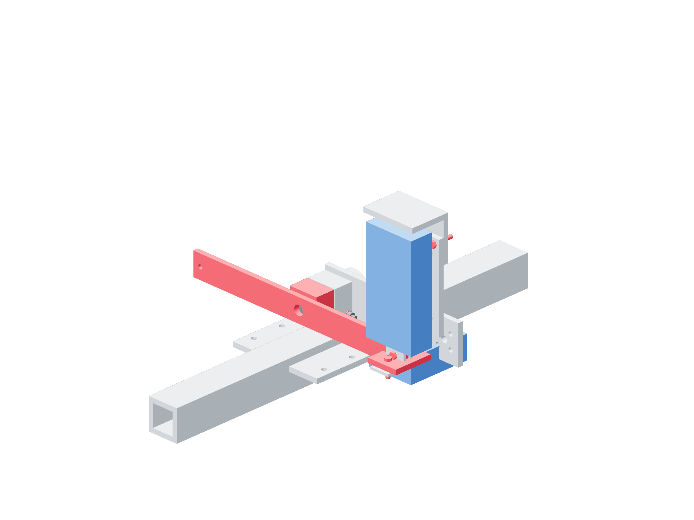

Preparation / hub qualification35 / 179
Build the supported hub proof fixture
Every hub is tested as the ungripped specimen on its own final marked shaft seat. A companion hub reacts torque through a metal plate gripped in the vise.
AddReuse 500 mm test column · one KP001 / pitch-bearing-foot · companion hub · angular-lever reaction plate · source support fasteners
Tools / setupBolted vise · independent noncontact catches · indicator · source actual-seat table

- Secure the horizontal 4040 column to the bench. Bolt the vise through its actual factory slots with the temporarily reused bench anchors.
- Mount KP001 on the borrowed foot with two 10 mm metal risers / M6 × 40 screws. Attach the foot with two M8 × 16 / slot8 joints; position its bearing from the next page’s table.
- Bolt the reaction plate to a companion hub with four M5 × 45 screws. Grip only its free metal area in the vise; keep the shaft and both hubs clear of vise pressure.
- Keep a visible 1 mm gap between hub faces. Remove or visibly clear all end keepers/tubes from the proof lever, specimen and companion; position independent catches without contact.
Ready when
The shaft is supported, the beam/vise cannot move and torque can pass from proof lever through the specimen clamp only. Hub-face contact, keeper contact, shaft grip or catch load bypasses the clamp. Unload and correct the actual fixture before recording a proof.